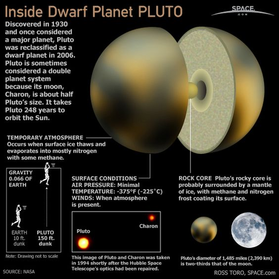

Pluto, once considered the ninth and most distant planet from the sun, is now the largest known dwarf planet in the solar system. It is also one of the largest known members of the Kuiper Belt, a shadowy disklike zone beyond the orbit of Neptune thought to be populated by hundreds of thousands of rocky, icy bodies each larger than 62 miles (100 kilometers) across, along with 1 trillion or more comets.
Pluto is smaller than seven of the solar system's moons ( Moon, Io, Europa, Ganymede, Callisto, Titan and Triton).
Pluto was discovered in 1930 by a fortunate accident. Calculations which later turned out to be in error had predicted a planet beyond Neptune, based on the motions of Uranus and Neptune. Not knowing of the error, Clyde W. Tombaugh at Lowell Observatory in Arizona did a very careful sky survey which turned up Pluto anyway.
After the discovery of Pluto, it was quickly determined that Pluto was too small to account for the discrepancies in the orbits of the other planets. The search for Planet X continued but nothing was found. Nor is it likely that it ever will be: the discrepancies vanish if the mass of Neptune determined from the Voyager 2 encounter with Neptune is used. There is no Planet X. But that doesn't mean there aren't other objects out there, only that there isn't a relatively large and close one like Planet X was assumed to be. In fact, we now know that there are a very large number of small objects in the Kuiper Belt beyond the orbit of Neptune, some roughly the same size as Pluto.
Until 2015 even the Hubble Space Telescope was able to resolve only the largest features on its surface (left and above). On 14 July 2015 the New Horizons spacecraft did a flyby of Pluto after being launched.
Pluto has five moons:Charon, Hydra, Nix, Kerberos, Styx.
Internal Structure

Pluto's density is 1.860±0.013 g/cm3. Because the decay of radioactive elements would eventually heat the ices enough for the rock to separate from them, scientists expect that Pluto's internal structure is differentiated, with the rocky material having settled into a dense core surrounded by a mantle of water ice. The diameter of the core is hypothesized to be approximately 1700 km, 70% of Pluto's diameter. It is possible that such heating continues today, creating a subsurface ocean of liquid water some 100 to 180 km thick at the core-mantle boundary.